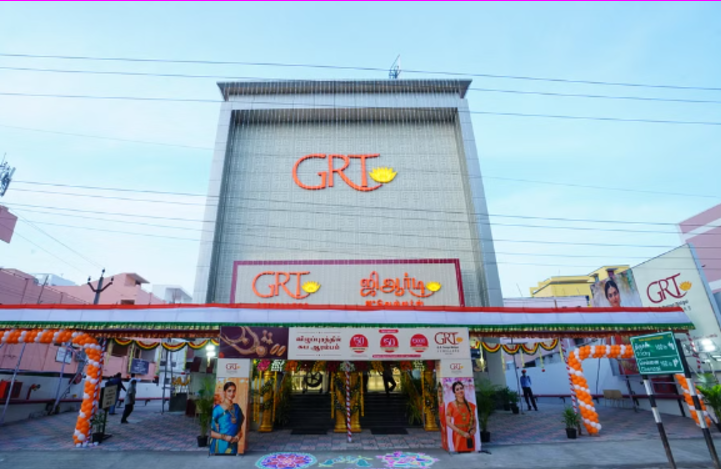

Villupuram
GRT JEWLLERS

-
GRT JEWELLERS is located in Villupuram, a town in Villupuram district in Tamil Nadu, INDIA.
-
GRTJewellers, is a jewellery firm based in the city of Villupuram, India. The firm also owns the Star Hotels GRT Grand Days in Vilupuram.
-
GRT Jewellers Villupuram, simply known as GRT, is a prominent jewellery brand based in Chennai, India.
With over five decades of history, it’s one of the most trusted and respected names in the jewellery industry.
-
It known for its exquisite collection of gold, diamond, platinum, and silver jewellery crafted by some of India’s finest artisans.
They offer a wide range of jewellery designs suitable for daily wear, weddings, parties, and special occasions.